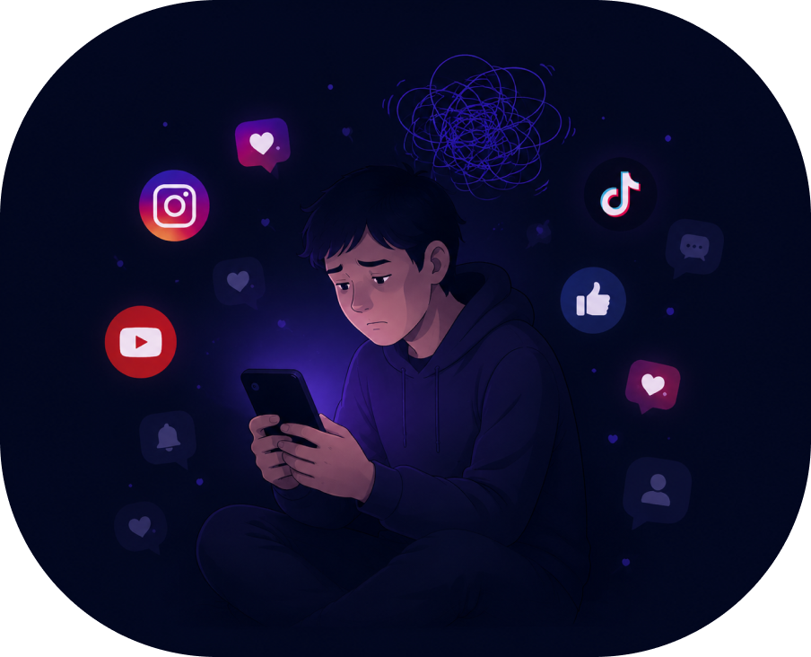

Las redes sociales forman parte de nuestra vida diaria, pero aprender a utilizarlas de manera consciente puede ayudarnos a encontrar un equilibrio entre nuestra vida digital y la vida real.

Conoce los principales aspectos del bienestar digital, identifica posibles riesgos y descubre formas de mantener una relación más saludable con las redes sociales.
Conoce los efectos que puede tener el uso excesivo de las redes sociales en diferentes aspectos de la vida cotidiana.
El uso excesivo puede relacionarse con dificultades para dormir, pérdida de concentración, estrés, aislamiento social, baja autoestima y dependencia digital. Conocer estos riesgos ayuda a tomar mejores decisiones.
Aprende pequeños hábitos que pueden ayudarte a controlar mejor tu tiempo y disfrutar de las redes de una manera más consciente.
Establece límites de tiempo, controla las notificaciones, sigue contenido que te aporte y recuerda dedicar tiempo a tus actividades, amigos y familiares fuera de las pantallas.
Encuentra herramientas, información y contenidos que pueden ayudarte a comprender mejor el impacto de las redes sociales.
Explora artículos, herramientas, estudios y recomendaciones relacionadas con el bienestar digital y el uso responsable de las redes sociales.
Aprende a cuidar tu bienestar personal y mantener relaciones saludables más allá de las pantallas.
Mantener un equilibrio entre la vida digital y la vida real puede ayudarte a cuidar tus relaciones, tu tiempo y tus actividades cotidianas.
Se trata de aprender a utilizarlas de una manera que aporte a tu vida, sin permitir que ocupen todo tu tiempo. Pequeños cambios pueden ayudarte a encontrar un mejor equilibrio digital.